RaastaShare · Digital Literacy · 27 November 2026
A design pass: clearer on a phone, same Cargo label look
We reviewed every page at phone size (390px) and on a desktop (1280px) with twelve design checks, found 21 problems, fixed 17 of them in six small batches, and checked each batch before keeping it.
1 · Dark mode
The next step stands out at night
The main button was dark brown on a near-black card: about 1.4 to 1, so "Request" barely showed.
- In dark mode it is now printed in light kraft with dark text.
- Light mode is unchanged.
- Four pairs of near-identical colours were merged, so there are fewer to manage.
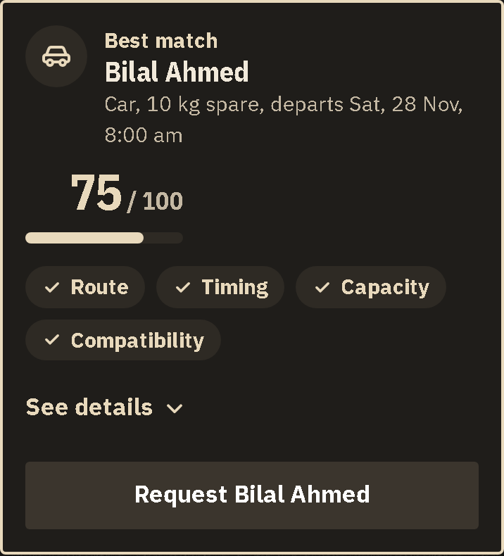
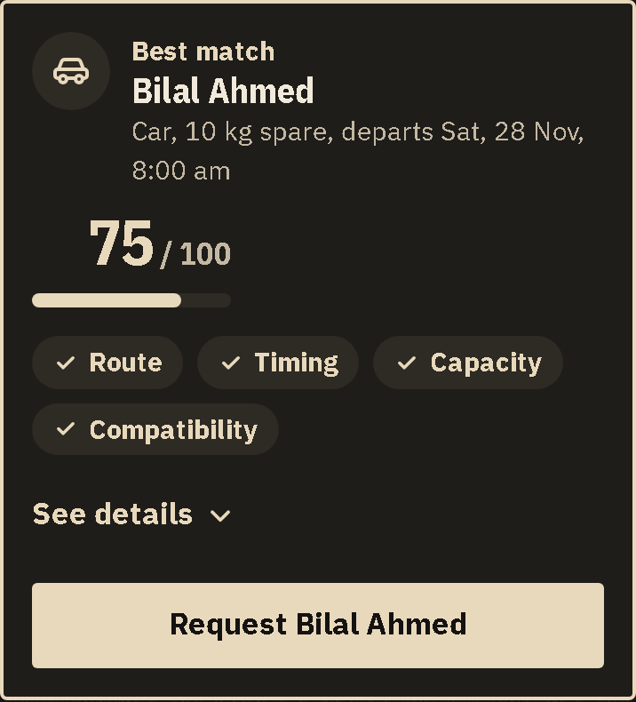
2 · Type
Stamped labels, so bold means something again
Almost everything was bold, so nothing stood out. We built three versions and the team picked one.
- Labels, badges and tab names use the narrow heading font, like text stamped on a shipping label.
- Bold is kept for names, prices and buttons.
- No new font: the app already had this one.
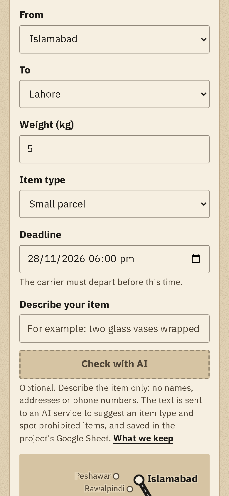
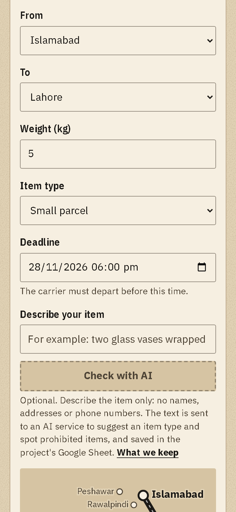
3 · Carry page
One reason first, the rest on request
A parcel that does not fit a carrier's journey listed every failed rule in a large box. One parcel could fill a phone screen.
- Now the first reason shows, and the others sit behind "See 2 more reasons".
- Wording reads naturally: "a car", "as bus luggage".
- The matching rules themselves did not change.
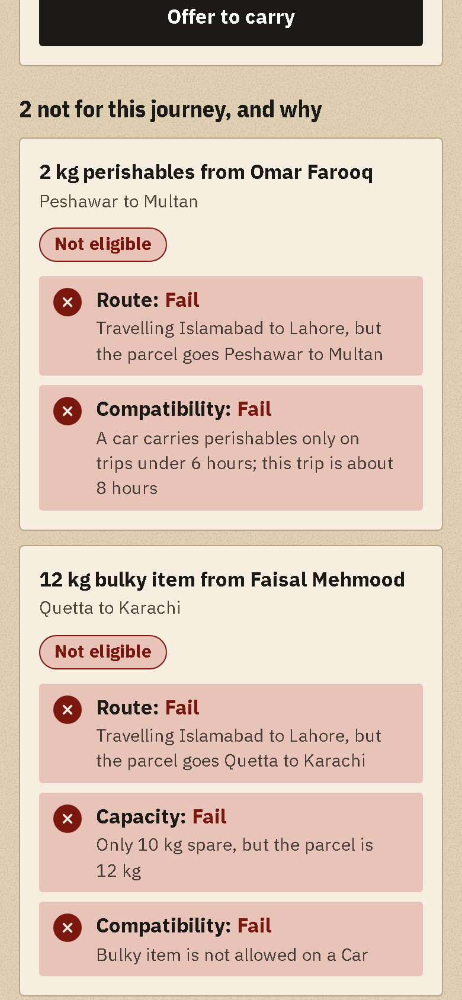
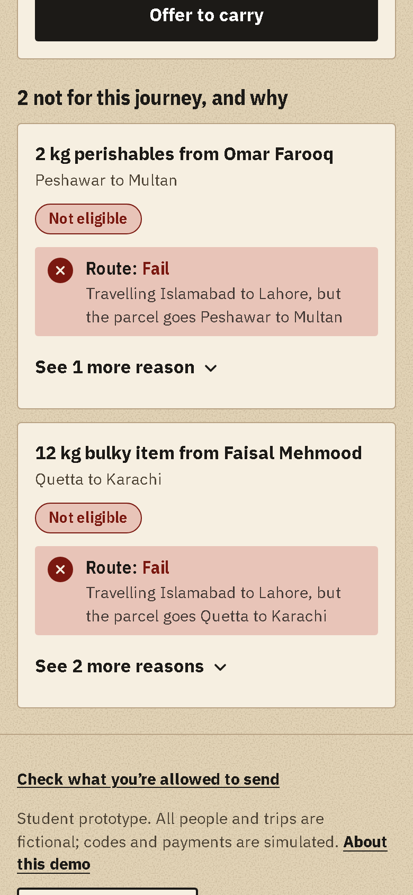
4 · Dashboard
Honest numbers when there is nothing yet
With no deliveries, Cost saved read "PKR 0 … 0% less … over 0 completed deliveries".
- Now it shows a dash and "No completed deliveries yet", like the matching time already did.
- Counts have commas (1,507), and "1 completed delivery" is singular.
- Only the display changed; the sums are the same.
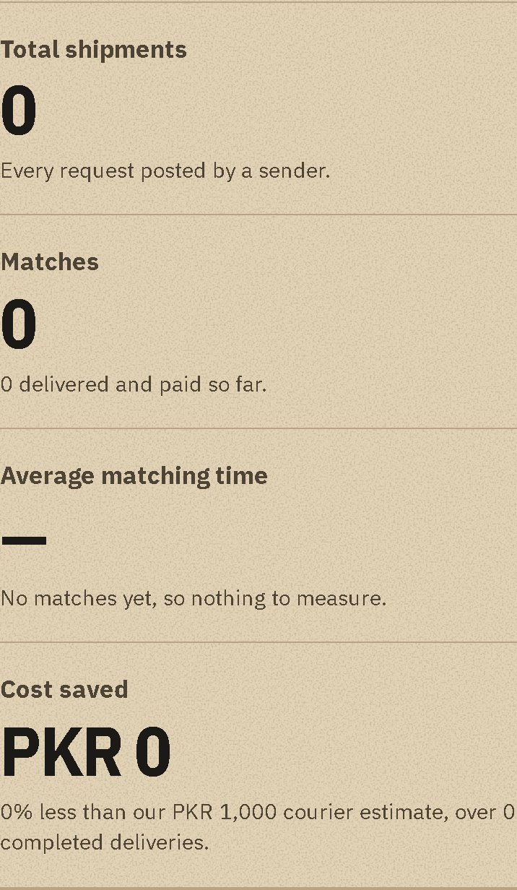
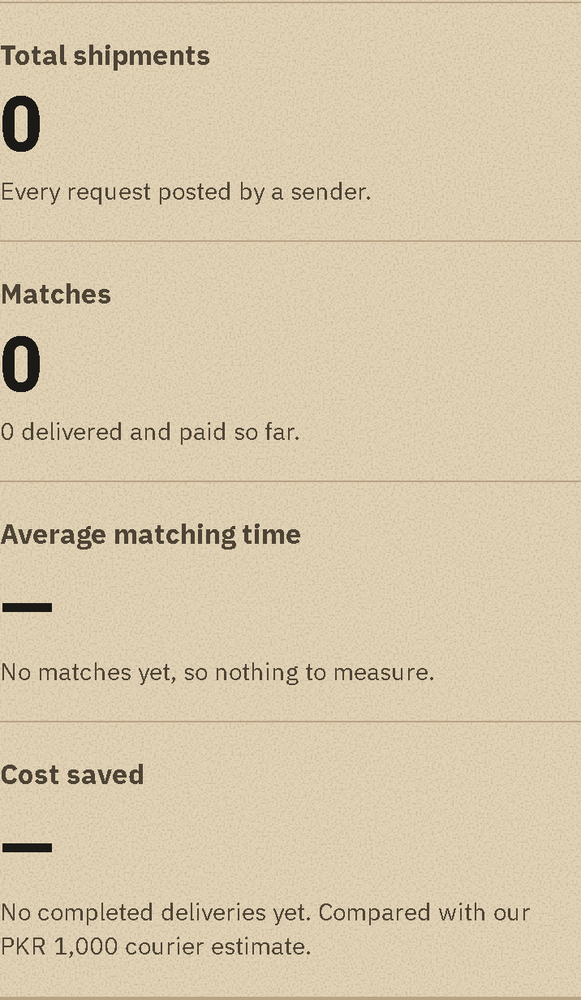
5 · Home on a desktop
Headline in three lines, map beside it
The headline broke into five lines and the map started halfway down the screen.
- Now the headline sets in three lines and the route picker is on the first screen.
- The map lines up with the headline, and was made larger after review.
- On phones the map now shows finished, because its animation ended before anyone scrolled to it.
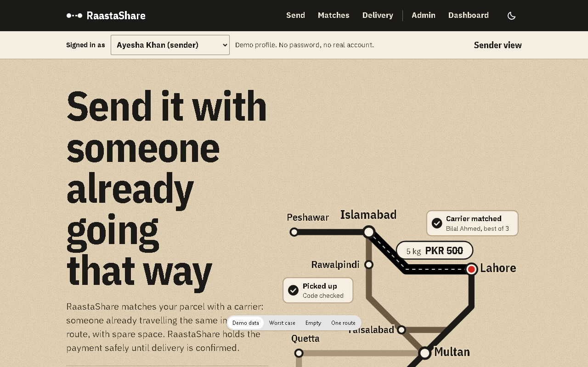
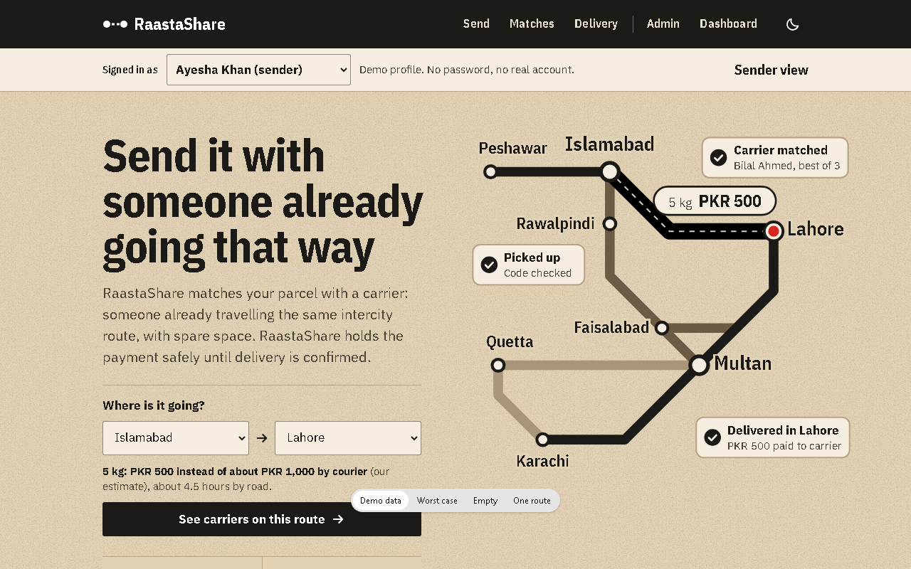
6 · Motion
Only what changes moves, and never for long
Opening the Matches page made the carrier cards rise in, every time. Now they rise in only right after you post a parcel, as the answer to "Post parcel".
- Every animation is 300ms or less, from five named lengths.
- The wrong-code shake went from 400ms to 280ms.
- An automatic check now catches motion that breaks these rules.
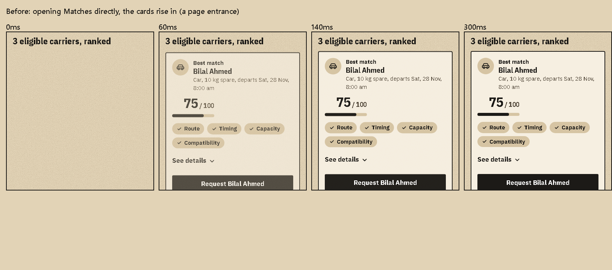
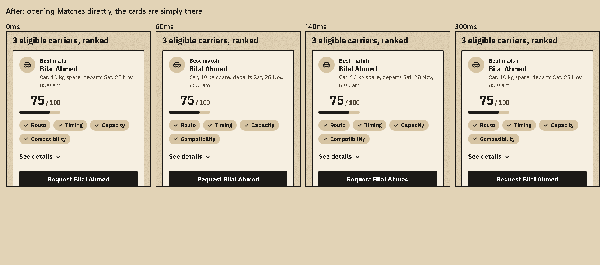